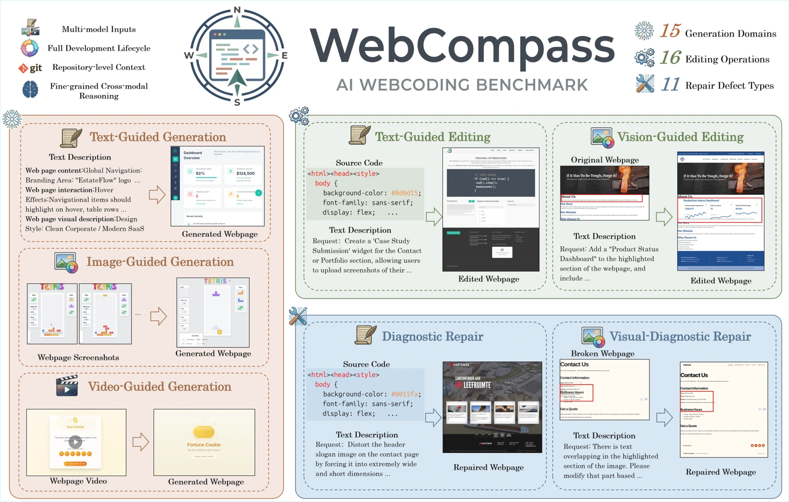
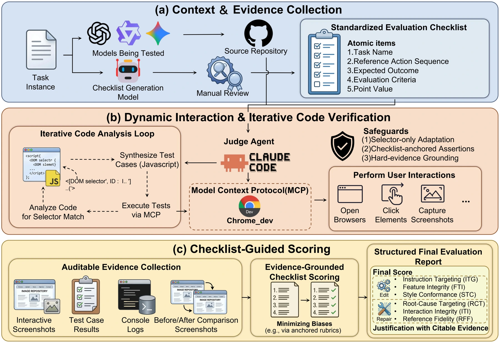

A generated page can be syntactically valid, pass every static check, and still be unusable: the layout collapses at another viewport, the button does nothing, the form silently discards input. Static correctness metrics were never designed to see any of that.
一个生成的页面可以语法合法、通过所有静态检查，却依然不可用：换个视口布局就塌了，按钮点不动，表单静默丢弃输入。静态正确性指标从来不是为发现这些而设计的。
Web engineering is also not a single act. A site is generated, then changed, then repaired, and most of the real cost sits in the second and third. Benchmarks that score only one-shot text-to-code generation measure the easiest part of the job and report it as the whole.
网页工程也不是一个单一动作。站点先被生成，再被修改，然后被修复，而真实的成本大多落在后两者。只评测一次性文本生成代码的基准，测的是这项工作里最容易的部分，却把它当成全部。
WebCompass is built around that gap. It spans three input modalities — text, image, video — and three task types — generation, editing, repair — giving seven categories, and it judges generation by actually driving the site in a browser instead of reading its source.
WebCompass 正是围绕这个缺口构建的。它覆盖三种输入模态——文本、图像、视频——与三类任务——生成、编辑、修复——构成七个类别，并通过在浏览器中真实驱动站点、而非阅读源码来评判生成质量。
Seven task categories from three input modalities × three task types, covering 15 generation domains, 16 editing operation types and 11 repair defect types, each graded Easy / Medium / Hard.
三种输入模态 × 三类任务构成七个任务类别，覆盖 15 个生成领域、16 类编辑操作与 11 类修复缺陷，每个实例标注简单 / 中等 / 困难。
Generation is scored by an Agent-as-a-Judge that launches the site in a real browser, explores interactions through Chrome DevTools MCP and writes targeted test cases — acceptance testing rather than code review.
生成任务由 Agent-as-a-Judge 打分：在真实浏览器中启动站点、通过 Chrome DevTools MCP 探索交互并编写针对性测试用例——这是验收测试，不是代码审查。
Across ten multimodal models, closed-source stays stronger and more balanced; aesthetics is the most persistent bottleneck, especially for open-source; and framework choice materially moves the score, with Vue consistently hard.
在十个多模态模型上，闭源模型更强也更均衡；美观是最持久的瓶颈，对开源模型尤甚；框架选择显著影响分数，Vue 始终偏难。
Generation, editing, repair生成、编辑与修复
The three task types are not three difficulties of the same skill. Generation asks whether something works at all. Editing asks whether a requested change lands without breaking everything the request did not mention. Repair asks whether a specific defect is fixed without losing interactions that already worked.
三类任务并不是同一技能的三种难度。生成问的是做出来的东西能不能跑；编辑问的是要求的改动能否落地，同时不破坏需求里没提到的其他部分；修复问的是某个具体缺陷是否被修掉，同时不丢失原本已经可用的交互。
That last clause is where most repairs fail. A fix can remove the bug and take the hover state, the keyboard path and the error message with it. Scoring repair only on whether the defect is gone would reward exactly that trade.
后一个限定正是大多数修复失败的地方。一次修改可以移除缺陷，同时把悬浮态、键盘路径和错误提示一起带走。如果只按缺陷是否消失来打分，就等于在奖励这种交换。
Editing and repair are judged with checklist-guided evaluation, which is the right tool when the intended change is known in advance: the checklist states what must hold, and the judge checks each item instead of forming a global impression. Generation has no such list, which is why it needs a different mechanism.
编辑与修复采用清单引导式评测，这在预期改动事先已知时是正确的工具：清单写明必须成立的条件，评判者逐项核对，而不是形成一个整体印象。生成任务没有这样的清单，因此需要另一套机制。


Executing the page instead of reading it运行页面，而不是阅读页面
For generation, WebCompass uses an agent as the judge. It loads the produced site in a real browser, navigates it, triggers interactions through Chrome DevTools MCP, and iteratively writes test cases against what it finds. The result resembles a QA engineer’s acceptance run more than a code review.
对生成任务，WebCompass 用一个智能体充当评判者：在真实浏览器中加载产出的站点、浏览它、通过 Chrome DevTools MCP 触发交互，并针对发现的问题迭代编写测试用例。这更接近 QA 工程师的验收流程，而非代码审查。
This matters because a screenshot is a state, not a behaviour. Two screenshots can look identical while one belongs to a page whose filter works and the other to a page whose filter silently does nothing. Only execution separates them.
这一点很关键，因为截图是状态，不是行为。两张截图可能看起来完全一样，但一张属于筛选功能可用的页面，另一张属于筛选功能静默失效的页面。只有运行才能把它们区分开。
The evaluation keeps three dimensions separate — can the site run, does it meet the requirement, does it look right — and averages nine scores overall. Ten multimodal models are tested through Claude Code 2.0.67, with further analyses on difficulty, framework and thinking mode.
评测把三个维度分开处理——站点能否运行、是否满足需求、是否好看——并综合九个分数。十个多模态模型通过 Claude Code 2.0.67 测试，另附难度、框架与思考模式的进一步分析。
What the results actually show结果究竟说明了什么
Closed-source models are stronger and, more tellingly, more balanced. Open-source entries tend to show a sharp profile, with one or two dimensions carrying the score while the others lag — a shape that a single aggregate number would flatten into an average.
闭源模型更强，更能说明问题的是也更均衡。开源模型往往呈现尖锐的能力剖面：一两个维度撑起分数，其余维度落后——而这种形状会被一个综合数字抹平成平均值。
Aesthetics is the persistent bottleneck and it is not close. Models that produce functioning applications still produce plainly unattractive ones, and the gap is widest for open-source models — a reminder that visual quality is a separate capability from code correctness, not a cosmetic add-on to it.
美观是最持久的瓶颈，而且差距不小。能够产出可运行应用的模型，仍然会产出明显不好看的应用，开源模型上的差距最大。这提醒我们：视觉质量是与代码正确性并列的一项独立能力，而不是后者的装饰性附属。
Two secondary findings are easy to lose in a ranking. Editing and repair have distinct difficulty profiles: repair tends to preserve interactivity better but remains harder to execute. And framework choice materially moves the score, with Vue consistently challenging and React or Vanilla/HTML stronger depending on the task — so part of a model’s web-coding score is really a fact about its default stack.
两个次要发现在排名里很容易丢失。编辑与修复的难度剖面不同：修复往往更好地保留了交互性，但执行起来更难。框架选择也实质性地改变分数——Vue 始终偏难，React 与原生 HTML 则视任务类型更强——因此一个模型的网页编程分数里，有一部分其实是在反映它默认的技术栈。


Reading a benchmark as a profile把基准当作能力剖面来读
The practical instruction is to stop treating web coding as one number. Runability, requirement adherence and visual quality fail independently, and a model can be excellent at two and unacceptable at the third.
实践上的建议是：别再把网页编程当作一个数字。可运行性、需求符合度与视觉质量会各自独立地失败，一个模型完全可能在前两项上出色、在第三项上不可接受。
The benchmark’s own limits should travel with its scores. Judges are automated, so dimension-level results inherit the judge’s blind spots, and a real browser runtime ties the measurement to one environment. A single aggregate ranking compresses both away.
基准自身的局限应当随分数一起被引用。评判是自动的，因此维度级结果会继承评判者的盲区；真实浏览器运行时又把测量绑定在某一个环境上。一个综合排名会把这两者都压缩掉。
The larger point is about what working means for generated software. Correct code is a precondition, not a deliverable. If evaluation only checks the precondition, training will optimise for it, and the thing users actually judge — whether the product works and looks right — stays unmeasured.
更根本的一点在于：对生成的软件而言，可用意味着什么。正确的代码是前提，不是交付物。如果评测只检查前提，训练就会去优化前提，而用户真正在意的——产品是否可用、是否好看——将持续处于无测量的状态。
Paper & authors
WebCompass: Towards Multimodal Web Coding Evaluation for Code Language Models
arXiv 2026
Cite this work
@misc{lei2026webcompassmultimodalwebcoding,
title = {WebCompass: Towards Multimodal Web Coding Evaluation for Code Language Models},
author = {Xinping Lei
and Xinyu Che
and Junqi Xiong
and Chenchen Zhang
and Yukai Huang
and Chenyu Zhou
and Haoyang Huang
and Minghao Liu
and Letian Zhu
and Hongyi Ye
and Jinhua Hao
and Ken Deng
and Zizheng Zhan
and Han Li
and Dailin Li
and Yifan Yao
and Ming Sun
and Zhaoxiang Zhang
and Jiaheng Liu},
year = {2026},
eprint = {2604.18224},
archivePrefix = {arXiv},
primaryClass = {cs.SE},
url = {https://arxiv.org/abs/2604.18224}
}